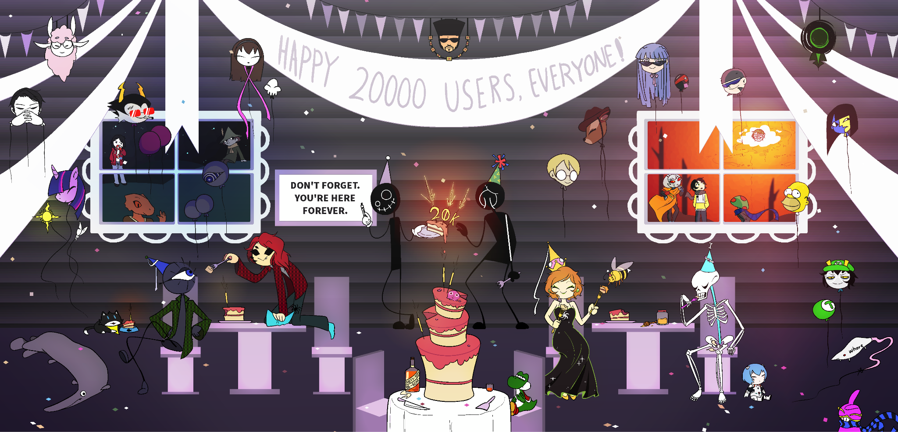
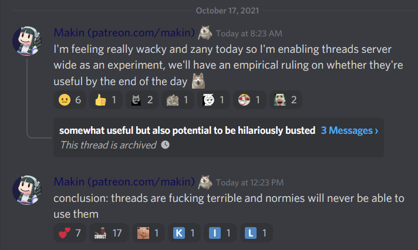

8th of August - The Huskening 2: Ascension
It’s been nearly a year since the last Reckoning, which means that it was time for Makin to conduct another mod team shakeup. The shakeup aspect of it is rather muted this time around, however: as this Reckoning proceeded, Makin made fun of the fact that it seemed we were mostly choosing the same staff members, though we actually did lose and gain a substantial number.
In particular: Tay, Anervaria, Ci, Neth, Penumbra, Prime, Reti, Tipsy, VirtuNat, Shroom, and Pax Probliscum were all completely removed from the team. Ennemy was initially removed completely, but I lobbied to have him come back as the art-cosplay pseudo. Tera was elevated directly from janitor to full mod, and B3es and Juliette (RAARzard) were promoted to full mod as well. In the wake of WoC’s resignation, grimPike was promoted to #gaming pseudo, although WoC is still present in mod chat as the bot master (attracting some grumbling from people who don’t appreciate his eccentricities). New staff members include Axolotl and Snoiper as #altgen janitors, then Chasca for #general pseudo, Kreuz (#science-math and #coding-tech), Lat (#general), Slashed Out (#homestuck), and Tyzuigi (#altgen).
For channel changes, I can’t remember the exact date upon which some of these occurred, so I will simply provide the ones that come to mind: #music was archived due to lack of activity, #western- and #eastern-media have been recombined into one channel simply named #media, and #alt-homestuck has been brought back by popular demand as #homosuck (with extreme warning provided such that, if harassment or threats break out again, it will immediately be removed again). Most dramatically, #fathusky was archived in the name of encouraging people to post fat husky everywhere in the server instead of just one place. Thus ends the fifth Reckoning.
Also of note: we’ve received word that the Pgenpodcast Discord server has officially dissolved. Interestingly, those in charge have discouraged but do not outright forbid their users from moving to our server (I’m not sure exactly why we were called out like this; perhaps we were seen as the only viable competitor). Regardless, it feels somewhat strange that Pgenpodcast has resolved in this manner. Time will tell if there’s any significance to it.
Nothing more for now.
17th of September
The second chapter of Deltarune was released somewhat unexpectedly today; it’s one of the more anticipated titles of people on this server, so we pulled the relevant channel out of retirement. As one might expect we were immediately inundated with an assortment of memes relevant to the game which have, thus far, largely stayed in the relevant channel (though some leakage in #mspa-lit and #general has happened).
The reception has ranged from generally positive to glowing. People whose opinions I generally expect to be more critical, such as Tay, are saying it’s a definite improvement in basically every way from chapter one, and that it’s rather enjoyable. Interestingly, Misha is abstaining from playing the game at all, stating that he’ll simply wait until full release; he had no problem waiting for a few years for Undertale’s hype to die down before he played that, apparently.
It’s important to note that people were expecting a full release and not just another chapter, so after three years the release feels a tad short. The hope is that the next installments will come out more quickly for a few reasons: Toby Fox has stated that chapter 2 was by far the longest chapter narratively, and a significant aspect of development was that he and his team had to recreate the engine from the ground up. It’s also been said that chapters 3, 4, and 5 have been worked on concurrently with chapter 2. Conservative estimates are that these chapters will be released together in another year, perhaps two. We’ll just have to see.
Nothing more for now.
30th of September
A couple things to note as September draws to a close: after a couple months of break so as to reduce fatigue, weekend streams are back. Especially exciting is the lineup, comprised of the show Venture Bros for the shorter episodes and Star Trek: The Next Generation for the longer stream. These are both considered high quality entertainment for various members of the chat, and I’m very excited for the later seasons of each show. It might be rocky at the start for each; both Venture Bros and TNG can be categorized as shows with subpar beginnings that undergo a significant transformation as they progress into the third season. Hopefully we’ll retain enough viewers to make it worthwhile.
Second thing I wanted to point out is this game which has taken various members of mspa-lit with some force: Deathloop, of which I know basically nothing, has turned into the flavor of the month but only for Misha, Tay, Tensei, Reti, Kreuz, and Makin (perhaps one or two others I failed to notice). Misha in particular seems to have been completely taken in by this, being unable to do basically anything else. Granted that he did watch TNG with us in WoC’s server not too long ago, but he’s even been missing out on the revitalized weekend stream in order to keep playing Deathloop. I’m not sure what compels him so much about the game, but I’m glad he’s enjoying himself at least.
More generally speaking, I felt like saying that this month has been extremely good. Server activity is up across the board and everyone feels more engaged than they have in a while, which I’m of course very happy to see. The new mod team has been experiencing some internal drama, perhaps the worst I’ve ever seen it, but I expect that things will smooth out as time goes by. Makin has been getting irritated with the circular arguments and threatened removal for a couple of individuals if this continues, hopefully it won’t come to that.
Nothing more for now.
7th of October
A member of chat who has been around for a while, known as uR, has been banned. Their presence and removal is notable mostly for being extremely annoying and constantly bizarre, prompting a mixed reception to the news. Many people are glad that he’s finally gone, as he had been known as a chronic shitter in #serious and #general, but there were others who saw him basically as a lolcow--Tyzuigi had been working on assembling a collection of the things uR was saying, as much to make fun of him as to keep track of the things he says which might be contradictory and illustrate something more concrete than just being a constant dumbass.
The instances of their shittery are manifold and in some cases almost hard to believe. Something that personally vexes me is that they were at one point in the Discord server dedicated to Cole’s excellent fanventure Karkat Goes To A Convention, from which he was banned for being generally creepy and weird (acting as if he was familiar with people with whom he had no real relationship, for one example). Cole actually described that he had been staying away from the HSD’s #homestuck channel and other places explicitly because uR inhabited them.
Other things comprising uR’s legacy are far, far too numerous to exhaustively record here, so I will simply list a few: accusations of stalking a woman he “wanted to befriend” whilst simultaneously describing as the “village bicycle;” stealing a $60 badge in advance of New York Comic Con, cheating on his girlfriend and then trying to justify it with various nonsensical excuses and fucked up logic; expressing an unironic desire to recreate multiple systems of fictional romance from Homestuck in real life; getting conned into buying a mixtape and then later getting conned into buying merchandise of said mixtape the next day; jonesing for a mod spot during the recent Reckoning because he wanted to “leave his mark on the server before it collapses,” and his own server takes all the refugees from the HSD’s collapse (he absolutely believed this was imminent at any given time). It’s honestly not worth continuing to describe these things, there’s just too many and one becomes inured to their strangeness.
The precise incident that precipitated his ban was being racist about the new Smash reveal with Sora from Kingdom Hearts: he said this character only got put into the game because, and I’m quoting verbatim here: “asians voted for it. And they outnumber us.” This was technically only his second ban, but he had been warned numerous times not to complain about his bans in #serious. Naturally he immediately went into #serious to complain about being banned for being racist netting himself a third ban, which triggers an automatic full server ban.
Thus, the evil was defeated. Many have breathed a collective sigh of relief at his removal. His unhinged, incoherent rants will no longer plague #serious. The thing that really interests me about it is that almost no one really doubted whether the things he was saying or claiming to do were real. There were a few people who brought up the possibility of it all being an elaborate ruse, but there’s no possible way someone could maintain that much effort so consistently for so long. Someone pointed out the irony that, in the end, uR ended up achieving the notoriety he was looking for. Who knows what he’ll do now.
Nothing more for now.
9th of October
Starting off the entry on a somber note: Juliette, formerly RAARzard, has been taken off of the team. She was considering leaving anyway, but she was simply involved in too many arguments in mod chat and could not stop being dramatic when dispensing justice or talking with people in an official capacity. I wish it hadn’t come to this, but such is as it is.
That being said, she will still be commemorated for her efforts alongside everyone else on the present and former team: we recently hit 20,000 users on the Discord server, and I commissioned some art from Nights to celebrate:

Though it took some time to get to us, it was worth the wait. The full mods are all drawn fully while pseudo mods and janitors are drawn as balloons: the former members of the staff are generally outside through the fenestrated planes.
In all, I think it’s absolutely lovely work. Nights very kindly gave us a discount when I commissioned it, charging only $70; Makin surprised me by paying for the entire thing, despite his general misgivings about paying for art. I have declared that this is now my annual salary.
In seriousness, I believe that showing some appreciation for your staff is important for maintaining morale and making sure they don’t just feel like tools. I’ve already done stuff like this before, but I think that codifying it so that every major team arrangement gets its own art piece is a good idea. It gives the team a chance to feel noticed and like they’re actually doing something important, plus I just enjoy looking at the result.
In conjunction with the art, I announced a giveaway: a few months ago an extremely generous user who wishes to remain anonymous donated a full set of figurines from Homestuck. These aren’t in production anymore and are thus extremely rare to find, especially in good condition. After assuring them the figures would be given away at no cost to the winner, they shipped them to me and will be distributed when the giveaway concludes on 10/25.
Makin has also charitably ponied up money for two smaller prizes of anything Homestuck related from For Fans By Fans $25 or less, winner’s choice, and making international shipping available. Though we probably won’t be able to do this kind of thing often, I’m grateful to see the Patreon funds being used for stuff like this. Seeing the community get excited and have a chance to participate in something fun is wonderful.
Nothing more for now.
17th of October
Makin was feeling somewhat wacky and zany today and decided to let the server test a Discord feature that got released some months ago, called threads. The thing to understand about Discord threads is that they are fucking awful. Just setting it up so that they would be possible resulted in a number of permission problems that I had to fix, such as allowing people to post messages in the categories for announcements and archived threads.
We discovered all sorts of problems with them, but it can be condensed down to the following issues: they are basically just a second set of channels where you have to key in channel permissions again, but due to the fact that any regular user can create them, they swiftly overpopulate the server and become completely ungovernable.
Creating a new channel for people to use often only requires one new person be added to the staff, sometimes none if you can find someone on the team willing to look at it. Threads, on the other hand, are so numerous and accessing them is just annoying enough that we would need to add several members to the team just to account for them. In the span of less than 30 minutes we saw the creation of: a “mod nudes” thread in mspa-lit by Dr Crayons, a “No women allowed” thread by Misha who--true to the name--summarily removed anyone identifying as a woman, “BRAPPOSTING” by WoC in #general for which he was immediately banned until further notice, and most egregiously, “The Cum” in #altgen by some horrible shithead I refuse to look up.
After four hours, Makin admitted defeat:

The end result is that, generally speaking, we will only keep threads for posts made in the announcements category, and then for special occasions like Reckonings or server surveys.
However, I have granted special permission for Sein to use them in #coding-tech because he claims he has a legitimate use case for them, specifically for letting people rant about their problems in isolation rather than spamming up the channel with specific issues they’re facing. I see no problem seeing if he can make them work, worst case scenario is that they either don’t get used or he uses them poorly and we just remove the ability. Regardless, the server as a whole will probably never utilize threads. I’m not sure what compelled Discord to add this horrible, horrible feature in the first place.
Nothing more for now.